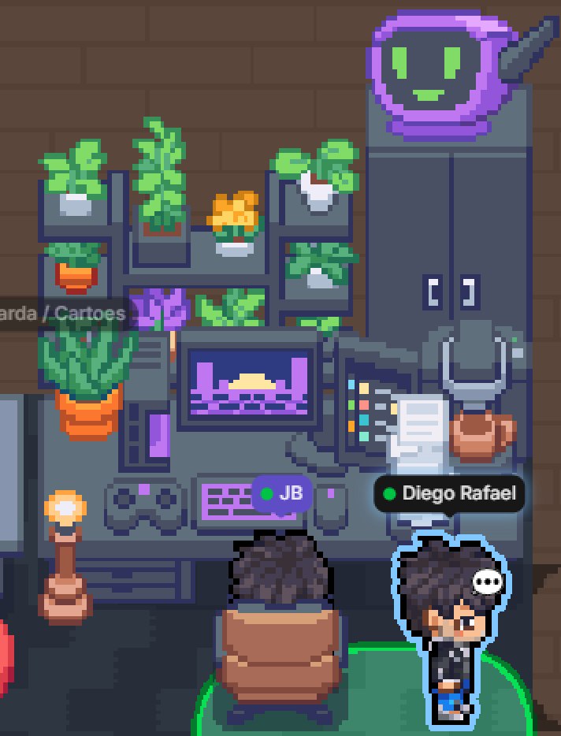
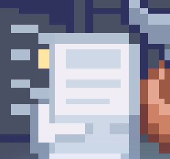
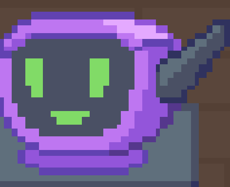
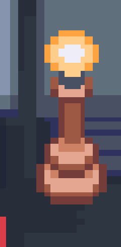

The reviews waiting on you, the pipeline that just went red, the meeting starting in five minutes — shown on the objects sitting on your desk in Gather, where the room can read them without anyone opening a tab or asking.




Smart Objects are a Gather feature, shipped in July 2026: you place one from Decorate Desk, it gives you a webhook URL and a key, and it renders whatever you send it. That part is theirs — their guide explains placing one, and their reference documents what each object accepts.
You do not need this project to use them. Anything that can make an HTTP request will do, and Gather publishes an SDK that handles the signing for you.
What lives here is the part after that: deciding what is worth showing, keeping it honest when a source goes quiet, and not spending your space's rate limit repeating yourself.
Each one answers a single thing, so a glance is enough. What feeds it is up to you.
A count readable across the room, and a feed of links you can click when you get there.
One face for the state of everything you don't have to touch. It smiles, questions, or warns.
Lit or dark, so it reads from anywhere in the room. You choose which fact it carries.
Connect one and it works. Everything you leave alone stays quietly off.
Reviews assigned to you and still unvoted, plus your own pull requests sitting open longer than two days.
Only the states you name as yours — and optionally only your team's current sprint.
The latest run per pipeline and branch, so a failure that has since been fixed stops counting. Main and develop are told apart, and you can exclude the one that is always red.
Meetings in progress or about to start, and invitations you haven't answered. All-day entries are ignored.
The same, from a Microsoft tenant. Both calendars can run at once.
Your monitor posts here when something goes down. Grafana and UptimeRobot have their own routes; anything else can use the plain one.
Place an object in Gather, copy its webhook URL and key into .env, then ask
what's missing. You don't have to fill everything in — one object and one source is a
working setup.
git clone git@github.com:Jbnado/gather-bots.git pnpm install cp .env.example .env pnpm checkup
Node 24 and pnpm. There is a compose file if you would rather not.
pnpm checkup tells you where you stand at any point. It separates "you
haven't set this up" from "you set it up and it's broken", because only the second one
needs you.
Smart objects ✓ Inbox inbox · inbox ✓ Bot Status Monitor status · activity-monitor ○ Lightbulb not configured Integrations ✓ Azure DevOps · pull requests ready ○ Google Calendar off — missing GOOGLE_CLIENT_ID → docs/integrations/google-calendar.md
The middle of the program knows nothing about Azure DevOps, Google, Microsoft — or about Gather. Three separate things can be added without touching it.
Jira, GitHub, Linear, an internal API. Return a list of signals, add one line to a list.
A different way of putting those signals on an object. A pure function, tested in a few lines.
Drive a Hue bulb, a Slack status, an LED strip. Nothing above it has to change.